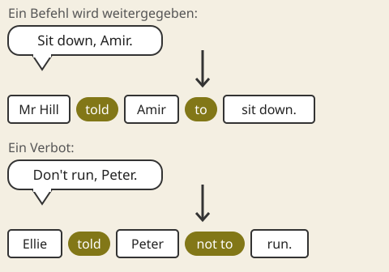

Sie sagte mir, ich soll warten: Bitten und Befehle weitergeben
Mit einem KI-Tutor lernen
Ein KI-Tutor erklärt dir diese Seite und hilft dir bei den Aufgaben. Wähl deinen Assistenten:
Mit Claude öffnen Mit ChatGPT öffnen Mit Mistral Vibe öffnen
Du nutzt dein eigenes Konto beim Anbieter. Der Assistent ist kein Angebot von lernapps.net: lernapps liefert nur Inhalte und Aufgaben. Die Wahl gilt für alle Seiten, nur auf diesem Gerät.
Vom Bericht zur Bitte
Heute geht es um Bitten und Befehle wie „Wait!“ und „Don’t run!“. Du liest gleich das Gespräch an der Klassenzimmertür. Davor eine Frage zur letzten Seite.
Aufgabe
Lösung
Ellie said that she would help richtige Antwort
Das Sagen ist vorbei, also wird will zu would.
Ellie said that she will help
Das Sagen ist vorbei, also rückt will eine Stufe zurück.
Ellie says that she would help
Says passt zu etwas, das jemand jetzt sagt.
Nach said rückt will zu would.
Das kannst du danach: Du gibst Bitten und Aufforderungen mit told oder asked, der Person und to weiter, auch Verbote mit not to.
Das Gespräch an der Tür
Jede Nachricht hat eine Nummer. In den Nachrichten 1 bis 10 sprechen die vier an der Tür. Später fragt Peter, was passiert ist, und Ellie erzählt es ihm. Beim Lesen: Achte auf Sätze ohne Subjekt, wie „Write the title.“ Sie sind der Anfang jedes Berichts weiter unten.
| Nr | Wer | Nachricht |
|---|---|---|
| 1 | Mr Hill | Good morning! Today we’re writing the notice for the door. Sophie, write the title. |
| 2 | Sophie | OK. Amir, please hold the paper. |
| 3 | Amir | Sure. Ellie, don’t stand in front of the door. People want to come in. |
| 4 | Ellie | Sorry! Mr Hill, which pen can I use? |
| 5 | Mr Hill | Use the blue pen, Ellie. Don’t use the red pen. |
| Englisch | Deutsch |
|---|---|
| notice | Zettel / Aushang |
| title | Titel / Überschrift |
| hold | halten |
| Nr | Wer | Nachricht |
|---|---|---|
| 6 | Sophie | Ellie, please wait. I need the ruler. |
| 7 | Ellie | OK, I’ll wait. |
| 8 | Amir | Mr Hill, can I draw a picture next to the title? |
| 9 | Mr Hill | Yes, draw our classroom. |
| 10 | Sophie | Great. Amir, please don’t move the paper! |
| Englisch | Deutsch |
|---|---|
| ruler | Lineal |
| move | bewegen |
| Nr | Wer | Nachricht |
|---|---|---|
| 11 | Peter | What happened at the door? |
| 12 | Ellie | Mr Hill told Sophie to write the title. Sophie asked Amir to hold the paper. |
| 13 | Ellie | Amir told me not to stand in front of the door. Mr Hill told me to use the blue pen. He told me not to use the red pen. |
| 14 | Ellie | Sophie asked me to wait. And she asked Amir not to move the paper. |
Aus dem Befehl wird told … to
Schau in die Nachrichten 12 bis 14. In Nachricht 1 sagt Mr Hill: „Sophie, write the title.“ In Nachricht 12 steht: „Mr Hill told Sophie to write the title.“ Aus dem Befehl wird ein Streifen mit told, der Person und to plus Verb. Mit „please“ sagst du meist asked, sonst meist told: Aus „Amir, please hold the paper.“ wird „Sophie asked Amir to hold the paper.“ Ein Verbot mit „Don’t“ wird not to.

© CC-BY-4.0Die olivgrünen Karten gehören zusammen: told, die Person, dann to oder not to.
| Gesagt | Weitergegeben | Wann? |
|---|---|---|
| “Be quiet.” | Mr Hill told us to be quiet. | Befehl: meist told |
| “Help me, please.” | Sophie asked Amir to help her. | mit please: meist asked |
| “Don’t be late.” | Mrs Parker told Peter not to be late. | Verbot: not to (oder to not) |
Merke
told oder asked, dann die Person, dann (not) to und das Verb. Hier kommt kein that-Satz mit gewöhnlichem Verb und kein Subjekt hinter der Person: nicht „He told me wait“ und nicht „He told me that I wait“. Beim Verbot sind not to und to not beide richtig.
| Englisch | Deutsch |
|---|---|
| laugh | lachen |
| carry | tragen |
| turn | umdrehen, umblättern |
| bread | Brot |
| phone | anrufen / Telefon |
Übung
Aufgabe
Lösung
Nur den roten Stift nehmen
Den roten soll sie nicht nehmen.
Den blauen Stift nehmen, nicht den roten richtige Antwort
Mr Hill sagt: „Use the blue pen. Don’t use the red pen.“
Den Stift an Sophie geben
Davon steht nichts im Gespräch.
Ellie soll blau nehmen und nicht rot.
Aufgabe
Lösung
Richtige Antwort: 12
In Nachricht 12 steht „asked Amir to hold“.
Aufgabe
Lösung
Sophie asked Amir to open the window richtige Antwort
Mit please passt meist asked.
Sophie told Amir to open the window richtige Antwort
Auch told geht, klingt aber meist strenger.
Sophie asked Amir that he opens the window
Nach asked steht to, kein that-Satz.
Sophie asked to Amir open the window
to steht vor dem Verb, nicht vor Amir.
told oder asked, die Person, dann to und das Verb.
Aufgabe
Welche Wörter passen? Lies zuerst den deutschen Satz.
- Ellie bat Amir, die Tür zu schließen. → Ellie … Amir … close the door.
- Mr Hill sagte Peter, er solle seine Jacke holen. → Mr Hill … Peter … get his jacket.
- Sophie sagte mir, ich soll nicht lachen. → Sophie told me … laugh.
Lösung
- Ellie asked Amir to close the door.
- Mr Hill told Peter to get his jacket.
- Sophie told me not to laugh.
Aufgabe
Lösung
Richtige Antwort: 1. Ellie, 2. asked, 3. Peter, 4. to, 5. take, 6. the, 7. paper
asked, die Person, to, das Verb.
Aufgabe
Mache aus der Sprechblase einen Streifen mit told oder asked. Schreibe den ganzen Satz.
- Mr Hill to Peter: “Open your book.”
- Sophie to Amir: “Please call Peter.”
- Mrs Parker to Ellie: “Don’t forget your coat.”
Lösung
- Mr Hill told Peter to open his book. (auch richtig: Mr Hill asked Peter to open his book.)
- Sophie asked Amir to call Peter. (auch richtig: Sophie asked Amir to phone Peter.; Sophie told Amir to call Peter.; Sophie told Amir to phone Peter.)
- Mrs Parker told Ellie not to forget her coat. (auch richtig: Mrs Parker told Ellie to not forget her coat.; Mrs Parker asked Ellie not to forget her coat.; Mrs Parker asked Ellie to not forget her coat.)
Aufgabe
Übersetze den Satz.
- Peter bat Sophie, mit ihm zu kommen.
- Ellie sagte Peter, er soll nicht so viel essen.
Lösung
- Peter asked Sophie to come with him.
- Ellie told Peter not to eat so much. (auch richtig: Ellie told Peter not to eat too much.; Ellie told Peter to not eat so much.; Ellie told Peter to not eat too much.)
Aufgabe
Hör zu und schreibe, was du hörst.
- KI
- KI
- KI
Lösung
- Mum asked me to buy some bread.
- Mr Hill told us to turn the page.
- Amir asked Sophie not to tell Peter.
Selbst sagen und schreiben
Aufgabe
Hör zu, sprich nach und nimm dich auf. Vergleiche dann mit dem Original.
Tipp
Hör den Satz zuerst. Sprich dann langsam nach.
- Ellie asked me to carry her bag.KI
- Mrs Parker told us not to eat before dinner.KI
- Peter asked Mr Hill to say it again.KI
Zum Aufnehmen braucht diese Aufgabe JavaScript. Die Beispiele kannst du auch ohne anhören.
Lösung
- Ellie asked me to carry her bag.
- Mrs Parker told us not to eat before dinner.
- Peter asked Mr Hill to say it again.
Offene Aufgabe
Peter war nicht dabei. Schreibe ihm zwei bis drei Sätze: Was haben dir andere gesagt oder was haben sie dich gebeten? Nimm told oder asked mit to und einmal not to. Sage, welche Bitte leicht oder schwer war.
Eine gute Antwort enthält:
Lösung
Mr Hill told me to write the date. He told me not to use the red pen. The first thing was easy, but the second was hard because I like red.
Der Zettel hängt
Der Zettel hängt an der Tür. Damit kannst du drei Dinge weitergeben: was jemand jetzt sagt, was er gesagt hat und was er verlangt hat. Die drei Karten hängen an der Satzstreifen-Wand.
| Karte | Wann? | Beispiel |
|---|---|---|
| says that | Das Gesagte gilt noch. | Peter says that he is hungry. |
| said that | Das Sagen ist vorbei, das Verb rückt eine Stufe zurück. | Peter said that he was hungry. |
| told / asked … to | Bitte oder Befehl, mit not to beim Verbot. | Mr Hill told us to sit down. |
Wenn du magst, übe es mit deinen Freunden: Einer sagt einen Satz, der andere gibt ihn weiter.
Fehler gefunden oder eine Idee für diese App?